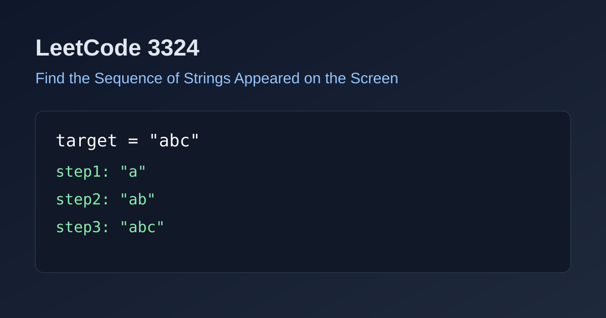

LeetCode 3324: Find the Sequence of Strings Appeared on the Screen (Simulation)
LeetCode 3324StringSimulationToday we solve LeetCode 3324 - Find the Sequence of Strings Appeared on the Screen.
Source: https://leetcode.com/problems/find-the-sequence-of-strings-appeared-on-the-screen/

English
Problem Summary
Starting from an empty screen, each operation appends one lowercase letter. Build all intermediate strings in order until the final target string appears.
Key Insight
Every operation adds one character to the end, so each visible string is exactly a prefix of target. Therefore the answer is simply all prefixes from length 1 to n.
Complexity Analysis
Time: O(n^2) total characters output, Space: O(n^2) for result storage.
Reference Implementations (Java / Go / C++ / Python / JavaScript)
class Solution { public List<String> stringSequence(String target) { List<String> ans = new ArrayList<>(); for (int i = 1; i <= target.length(); i++) ans.add(target.substring(0, i)); return ans; } }func stringSequence(target string) []string { ans := make([]string, 0, len(target)); for i := 1; i <= len(target); i++ { ans = append(ans, target[:i]) }; return ans }class Solution { public: vector<string> stringSequence(string target) { vector<string> ans; for (int i = 1; i <= (int)target.size(); i++) ans.push_back(target.substr(0, i)); return ans; } };class Solution:
def stringSequence(self, target: str) -> list[str]:
return [target[:i] for i in range(1, len(target) + 1)]var stringSequence = function(target) { const ans = []; for (let i = 1; i <= target.length; i++) ans.push(target.slice(0, i)); return ans; };中文
题目概述
从空字符串开始，每次在末尾追加一个小写字母。要求按出现顺序返回直到 target 出现时屏幕上出现过的所有字符串。
核心思路
每一步都只会在末尾追加一个字符，所以所有出现的字符串必然是 target 的前缀，按长度 1 到 n 依次收集即可。
复杂度分析
时间复杂度：O(n^2)（输出总字符数），空间复杂度：O(n^2)。
多语言参考实现（Java / Go / C++ / Python / JavaScript）
class Solution { public List<String> stringSequence(String target) { List<String> ans = new ArrayList<>(); for (int i = 1; i <= target.length(); i++) ans.add(target.substring(0, i)); return ans; } }func stringSequence(target string) []string { ans := make([]string, 0, len(target)); for i := 1; i <= len(target); i++ { ans = append(ans, target[:i]) }; return ans }class Solution { public: vector<string> stringSequence(string target) { vector<string> ans; for (int i = 1; i <= (int)target.size(); i++) ans.push_back(target.substr(0, i)); return ans; } };class Solution:
def stringSequence(self, target: str) -> list[str]:
return [target[:i] for i in range(1, len(target) + 1)]var stringSequence = function(target) { const ans = []; for (let i = 1; i <= target.length; i++) ans.push(target.slice(0, i)); return ans; };
Comments